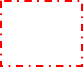
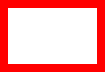
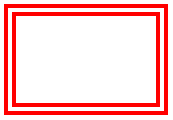
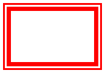
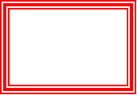
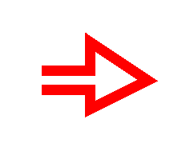
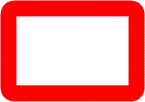
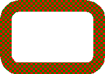
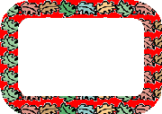
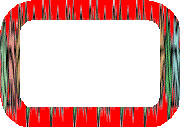

Back to top
Back to toptitle: Using the Stroke Element description: This article describes using the Stroke element of VML, a feature that is deprecated as of Windows Internet Explorer 9. ms.assetid: e3d9dbe5-e087-4b6f-8318-c7d4485cd502 keywords:
This topic describes VML, a feature that is deprecated as of Windows Internet Explorer 9. Webpages and applications that rely on VML should be migrated to SVG or other widely supported standards.
[!Note]
As of December 2011, this topic has been archived. As a result, it is no longer actively maintained. For more information, see Archived Content. For information, recommendations, and guidance regarding the current version of Windows Internet Explorer, see Internet Explorer Developer Center.
Â
Using <stroke>
As you've learned, you can use the strokecolor and strokeweight property attributes of a predefined shape -- such as <oval> , <line>, <polyline>, <curve>, <rect>, <roundrect>, <arc> -- to specify the color and weight of a shape's outline. In this topic, we will illustrate how to draw a shape that has a more advanced outline.
You can place the <stroke> sub-element inside the <shape>, or <shapetype>, or any predefined shape element to describe how to draw the outline of the shape. You can then use the property attributes -- for example, dashstyle, opacity, linestyle, joinstyle, filltype -- of the <stroke> sub-element to customize the outline.
You can use the dashstyle property attribute of the <stroke> sub-element to draw an outline with various dash styles.
Examples:
If you specify <v:stroke dashstyle="solid" /> inside the <line> element, you can create a solid line, as shown in the following VML representation:
<v:line style='position:relative;' from="20pt,20pt" to="200pt,20pt"
strokecolor="red" strokeweight="2pt">
<v:stroke dashstyle="solid" />
</v:line>
If you change the dashstyle property attribute to "dot", you can create a dotted line, as shown in the following VML representation:
<v:line style='position:relative;' from="20pt,20pt" to="200pt,20pt"
strokecolor="red" strokeweight="2pt">
<v:stroke dashstyle="dot" />
</v:line>
If you change the dashstyle property attribute to "dash", you can create a dash line, as shown in the following VML representation:
<v:line style='position:relative;' from="20pt,20pt" to="200pt,20pt"
strokecolor="red" strokeweight="2pt">
<v:stroke dashstyle="dash" />
</v:line>
If you change the dashstyle property attribute to "dashdot", you can create a line with a dashed and dotted style, as shown in the following VML representation:
<v:line style='position:relative;' from="20pt,20pt" to="200pt,20pt"
strokecolor="red" strokeweight="2pt">
<v:stroke dashstyle="dashdot" />
</v:line>
If you change the dashstyle property attribute to "longdash", you can create a line with a long dashed style, as shown in the following VML representation:
<v:line style='position:relative;' from="20pt,20pt" to="200pt,20pt"
strokecolor="red" strokeweight="2pt">
<v:stroke dashstyle="longdash" />
</v:line>
If you change the dashstyle property attribute to "longdashdot", you can create a line with a long dashed and dotted style, as shown in the following VML representation:
<v:line style='position:relative;' from="20pt,20pt" to="200pt,20pt"
strokecolor="red" strokeweight="2pt">
<v:stroke dashstyle="longdashdot" />
</v:line>
If you place <v:stroke dashstyle="dashdot" /> inside the <rect> element, you can create a rectangle that has a dashed and dotted outline, as shown in the following VML representation:

<v:rect style='width:100pt;height:80pt' strokecolor="red" strokeweight="2pt"/>
<v:stroke dashstyle="dashdot" />
</v:rect>
You can use the opacity property attribute of the <stroke> sub-element to draw an outline with various opacity styles. The value for the opacity property attribute can be any number between 0 to 1. By default, it is 1, indicating full opacity.
Examples:
The following VML representation creates a line with full opacity:

<v:line style='position:relative;' from="20pt,50pt" to="200pt,50pt" strokecolor="red"
strokeweight="2pt">
</v:line>
If you add <v:stroke opacity="0.5" /> inside the <line> element, you can create a line with 50% opacity, as shown in the following VML representation:

<v:line style='position:relative;' from="20pt,50pt" to="200pt,50pt" strokecolor="red"
strokeweight="2pt">
<v:stroke opacity="0.5" />
</v:line>
You can use the linestyle property attribute of the <stroke> sub-element to draw an outline with various line styles.
Examples:
If you specify <v:stroke linestyle="single" /> inside the <rect> element, you can create a rectangle with a single outline, as shown in the following VML representation:

<v:rect style='width:120pt;height:80pt' strokecolor="red" strokeweight="10pt">
<v:stroke linestyle="single" />
</v:rect>
If you change the linestyle property attribute to "thinthin", you can create a rectangle with the outline (1:1:1), as shown in the following VML representation:

<v:rect style='width:120pt;height:80pt' strokecolor="red"
strokeweight="10pt">
<v:stroke linestyle="thinthin" />
</v:rect>
If you change the linestyle property attribute to "thinthick", you can create a rectangle with the outline (1:1:2), as shown in the following VML representation:

<v:rect style='width:120pt;height:80pt' strokecolor="red"
strokeweight="10pt">
<v:stroke linestyle="thinthick" />
</v:rect>
If you change the linestyle property attribute to "thickthin", you can create a rectangle with the outline (2:1:1), as shown in the following VML representation:
<v:rect style='width:120pt;height:80pt' strokecolor="red"
strokeweight="10pt">
<v:stroke linestyle="thickthin" />
</v:rect>
If you change the linestyle property attribute to "thickbetweenthin", you can create a rectangle with the outline (1:1:2:1:1), as shown in the following VML representation:

<v:rect style='width:120pt;height:80pt' strokecolor="red"
strokeweight="10pt">
<v:stroke linestyle="thickbetweenthin" />
</v:rect>
You can use the joinstyle attribute of the <stroke> sub-element to define how lines are joined together.
For example, to create a shape that has the round-join outline, as shown in the following illustration, you can specify <v:stroke joinstyle="round" /> inside the <polyline> element, as shown in the following VML representation:
<v:polyline
points="81pt,54pt,126pt,54pt,126pt,27pt,180pt,63pt,126pt,90pt,126pt,1in,81pt,1in"
strokecolor="red" strokeweight="20pt">
<v:stroke joinstyle="round" />
</v:polyline>
If you change the joinstyle property attribute to "bevel", you can create a shape that has the bevel-join outline, as shown in the following VML representation:
<v:polyline
points="81pt,54pt,126pt,54pt,126pt,27pt,180pt,63pt,126pt,90pt,126pt,1in,81pt,1in"
strokecolor="red" strokeweight="20pt">
<v:stroke joinstyle="bevel" />
</v:polyline>
If you change the joinstyle property attribute to "miter", you can create a shape that has the miter-join outline, as shown in the following VML representation:

<v:polyline
points="81pt,54pt,126pt,54pt,126pt,27pt,180pt,63pt,126pt,90pt,126pt,1in,81pt,1in"
strokecolor="red" strokeweight="20pt">
<v:stroke joinstyle="miter" />
</v:polyline>
You can use the filltype property attribute of the <stroke> sub-element to draw an outline with various fill effects.
Examples:
If you specify <v:stroke filltype="solid" /> inside the <roundrect> element, you can create a rounded rectangle with the solid-filled outline, as shown in the following VML representation:

<v:roundrect style='width:120pt;height:80pt' strokecolor="red"
strokeweight="15pt">
<v:stroke filltype="solid" />
</v:roundrect>
If you change the filltype property attribute to "pattern", point the src property attribute to the location of the pattern image file, and set the color2 property attribute to the second pattern color, you can create a rounded rectangle with a pattern outline, as shown in the following VML representation:

<v:roundrect style='width:120pt;height:80pt' strokecolor="red"
strokeweight="15pt">
<v:stroke filltype="pattern" src="image.gif"
color2="green" />
</v:roundrect>
If you change the filltype property attribute to "tile" and point the src property attribute to the location of the image file, you can create a rounded rectangle with a tiled outline, as shown in the following VML representation:

<v:roundrect style='width:120pt;height:80pt' strokecolor="red"
strokeweight="15pt">
<v:stroke filltype="tile" src="image2.gif" />
</v:roundrect>
If you change the filltype property attribute to "frame" and point the src property attribute to the location of the image file, you can create a rounded rectangle with a picture outline, as shown in the following VML representation:

<v:roundrect style='width:120pt;height:80pt' strokecolor="red"
strokeweight="15pt">
<v:stroke filltype="frame" src="image2.gif" />
</v:roundrect>
For more information about this element, see the VML specification .
Â
Â